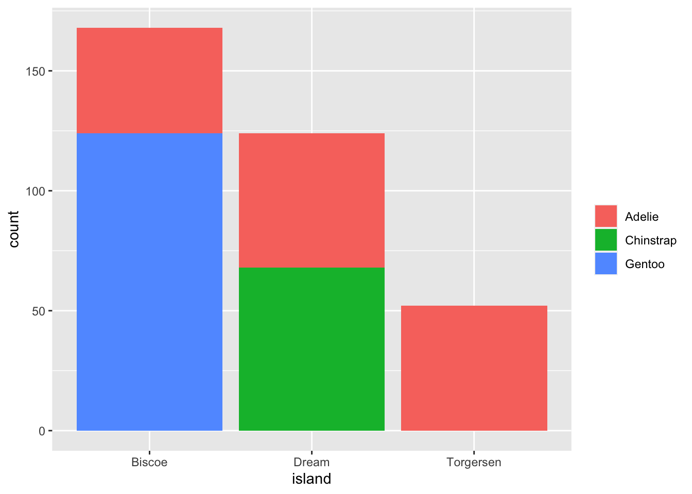
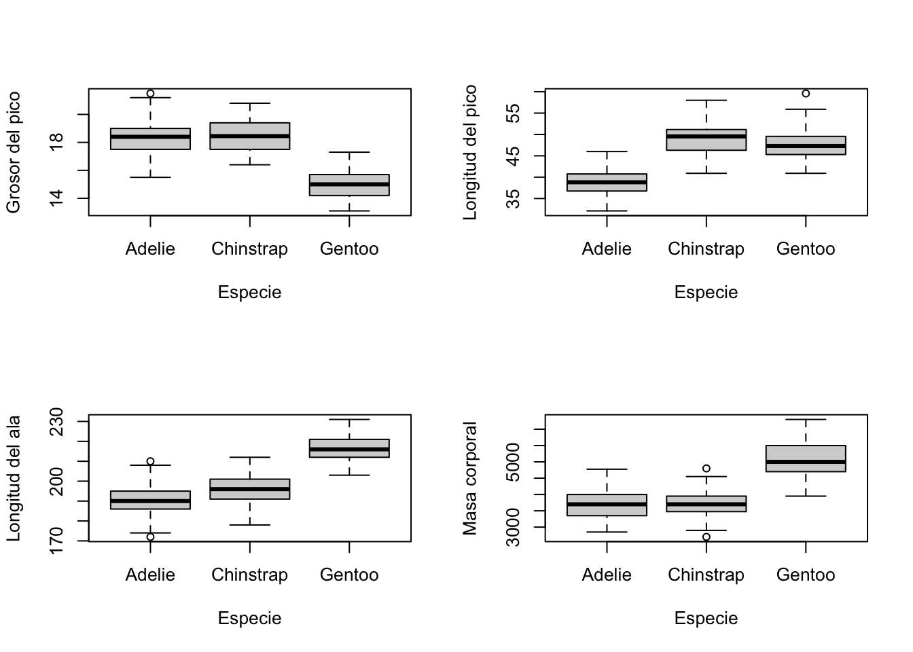

# A tibble: 10 × 8
species island bill_length_mm bill_depth_mm flipper_length_mm body_mass_g
<fct> <fct> <dbl> <dbl> <int> <int>
1 Adelie Torgersen 39.1 18.7 181 3750
2 Adelie Torgersen 39.5 17.4 186 3800
3 Adelie Torgersen 40.3 18 195 3250
4 Adelie Torgersen NA NA NA NA
5 Adelie Torgersen 36.7 19.3 193 3450
6 Adelie Torgersen 39.3 20.6 190 3650
7 Adelie Torgersen 38.9 17.8 181 3625
8 Adelie Torgersen 39.2 19.6 195 4675
9 Adelie Torgersen 34.1 18.1 193 3475
10 Adelie Torgersen 42 20.2 190 4250
# ℹ 2 more variables: sex <fct>, year <int>Práctica 1
Hola cucas, a ver en principio esta echo, lo que me he hecho un poco la picha un lio con el tema de los nombres de los data frames, os hago un resumen, y si se os ocurren nombre mejores (que es lo más probable, pq los mios resultan traumáticos) me decis y los cambio. Un besote xoxos.
!!!!!!!!!!!!!!!!!!!!!!!!!!!!!!!!!!!!!!!!!!!!!!!!!!!!!!!!!!!!!!!! pinguinos ### data frame original pinguinos_sin_filas_NA_por_todo ### data frame sin las dos filas que tinen NA por todo —–> i.e fila 4 y 272 ;) pinguinos_sin_NA ### data frame sin ningun NA —–> i.e le he aplicado la función na.omit() ¡¡¡¡¡¡¡¡¡¡¡¡¡¡¡¡¡¡¡¡¡¡¡¡¡¡¡¡¡¡¡¡¡¡¡¡¡¡¡¡¡¡¡¡¡¡¡¡¡¡¡¡¡¡¡¡¡¡¡¡¡¡¡¡
Aquí dejamos la dirección de nuestro repositorio Github: https://github.com/MargalidaVerd/Practica1.git
Primero instalamos el paquete palmerpenguins y mostramos por pantalla las primeras filas para asegurarnos que se ha cargado correctamente:
Veamos su estructura:
tibble [344 × 8] (S3: tbl_df/tbl/data.frame)
$ species : Factor w/ 3 levels "Adelie","Chinstrap",..: 1 1 1 1 1 1 1 1 1 1 ...
$ island : Factor w/ 3 levels "Biscoe","Dream",..: 3 3 3 3 3 3 3 3 3 3 ...
$ bill_length_mm : num [1:344] 39.1 39.5 40.3 NA 36.7 39.3 38.9 39.2 34.1 42 ...
$ bill_depth_mm : num [1:344] 18.7 17.4 18 NA 19.3 20.6 17.8 19.6 18.1 20.2 ...
$ flipper_length_mm: int [1:344] 181 186 195 NA 193 190 181 195 193 190 ...
$ body_mass_g : int [1:344] 3750 3800 3250 NA 3450 3650 3625 4675 3475 4250 ...
$ sex : Factor w/ 2 levels "female","male": 2 1 1 NA 1 2 1 2 NA NA ...
$ year : int [1:344] 2007 2007 2007 2007 2007 2007 2007 2007 2007 2007 ...Observemos que la variable year es considerada un número pero no nos aporta información numérica sino que es más un factor a tener en cuenta como dato y no como número. Así pues, vamos a considerarla un factor:
tibble [344 × 8] (S3: tbl_df/tbl/data.frame)
$ species : Factor w/ 3 levels "Adelie","Chinstrap",..: 1 1 1 1 1 1 1 1 1 1 ...
$ island : Factor w/ 3 levels "Biscoe","Dream",..: 3 3 3 3 3 3 3 3 3 3 ...
$ bill_length_mm : num [1:344] 39.1 39.5 40.3 NA 36.7 39.3 38.9 39.2 34.1 42 ...
$ bill_depth_mm : num [1:344] 18.7 17.4 18 NA 19.3 20.6 17.8 19.6 18.1 20.2 ...
$ flipper_length_mm: int [1:344] 181 186 195 NA 193 190 181 195 193 190 ...
$ body_mass_g : int [1:344] 3750 3800 3250 NA 3450 3650 3625 4675 3475 4250 ...
$ sex : Factor w/ 2 levels "female","male": 2 1 1 NA 1 2 1 2 NA NA ...
$ year : Factor w/ 3 levels "2007","2008",..: 1 1 1 1 1 1 1 1 1 1 ...Como podemos observar, el tamaño de la muestra realizada es de 344 pingüinos, de los que se han tomado datos de 8 variables diferentes. Entre estas encontramos tres variables de tipo factor: species, que puede tomar tres valores (“Adelie”, “Chinstrap”, “Gentoo”); la variable island, que asigna la isla de procedencia de cada individuo y toma tres valores también, que son “Biscoe”, “Dream” y “Torgersen”; finalmente los niveles de la variable sex son “female” y “male”, y year, que se atribuye al año de estudio de cada pingüino (2007, 2008 o 2009).
También encontramos dos variables del tipo numérico, que son bill_length_mm, que corresponde a la longitud del pico de cada pingüino, en milímetros, y bill_depth_mm, que corresponde al grosor del pico, también en milímetros.
Finalmente, tenemos tres últimas variables de tipo integer: flipper_length_mm, que corresponde a la longitud de las aletas de cada pingüino, en milímetros, y body_mass_g, que recoge la masa corporal en gramos de cada individuo.
Observamos también que hay valores NA, sin embargo, solo descartaremos a dichos sujetos en el caso en que esto nos afecte al estudio de los datos. Veamos pues, cuales son las muestras que contienen algun valor NA:
# A tibble: 11 × 8
species island bill_length_mm bill_depth_mm flipper_length_mm body_mass_g
<fct> <fct> <dbl> <dbl> <int> <int>
1 Adelie Torgersen NA NA NA NA
2 Adelie Torgersen 34.1 18.1 193 3475
3 Adelie Torgersen 42 20.2 190 4250
4 Adelie Torgersen 37.8 17.1 186 3300
5 Adelie Torgersen 37.8 17.3 180 3700
6 Adelie Dream 37.5 18.9 179 2975
7 Gentoo Biscoe 44.5 14.3 216 4100
8 Gentoo Biscoe 46.2 14.4 214 4650
9 Gentoo Biscoe 47.3 13.8 216 4725
10 Gentoo Biscoe 44.5 15.7 217 4875
11 Gentoo Biscoe NA NA NA NA
# ℹ 2 more variables: sex <fct>, year <fct>Observamos que tenemos dos pinguinos de los que tan sólo sabemos la isla y el año en que se les fué tomada la muestra. Sin embargo, de el resto de pinguinos, los valores NA vienen asociados a la variable sexo. Por lo tanto, a la hora de descartar dichas muestras , lo haremos en función de la variable que estemos estudiando.
Así pues, trabajaremos con el data frame original siempre que no indiquemos lo contrario.
Datos demográficos
Primero de todo, vamos a hacer un análisis de los datos básicos de la muestra, para familiarizarnos con ellos y poder estudiarlos con detalle más adelante. Empecemos por las especies de pingüinos. Recordemos que hay tres:
“Adelie”
“Chinstrap”
“Gentoo”
Veamos sus frecuencias relativas:
Adelie Chinstrap Gentoo
152 68 124 Con cierta diferencia, la especie más poblada es la Adelie, seguida de Gentoo y, finalmente, Chinstrap.
También es interesante estudiar la población por islas. A continuación lo vemos:
Biscoe Dream Torgersen
168 124 52 Como podemos ver, la isla más poblada es la de Biscoe, seguida de Dream y, por último, ya más alejada en cuanto a valores, la isla Torgersen.
Analicemos ahora la población de cada isla por especies; es decir, nos interesa ilustrar la cantidad de pingüinos de cada especie en cada isla. En el siguiente gráfico vemos como la especie Adelie se haya en las tres islas, mientras que las otras dos solo en una de ellas.

Un dato también a tener en cuenta en nuestro AED es el año de estudio de los individuos. Visualicemos el recuento:
2007 2008 2009
110 114 120 El tamaño de las muestras de cada año no fluctua significativamente.
Finalmente, veamos el sexo de los individuos de la muestra. Observamos, que ahora si que debemos tener en cuenta los valores NA, por lo tanto, ahora trabajaremos con el data frame que omite todas las filas que contienen algun valor NA.
tibble [333 × 8] (S3: tbl_df/tbl/data.frame)
$ species : Factor w/ 3 levels "Adelie","Chinstrap",..: 1 1 1 1 1 1 1 1 1 1 ...
$ island : Factor w/ 3 levels "Biscoe","Dream",..: 3 3 3 3 3 3 3 3 3 3 ...
$ bill_length_mm : num [1:333] 39.1 39.5 40.3 36.7 39.3 38.9 39.2 41.1 38.6 34.6 ...
$ bill_depth_mm : num [1:333] 18.7 17.4 18 19.3 20.6 17.8 19.6 17.6 21.2 21.1 ...
$ flipper_length_mm: int [1:333] 181 186 195 193 190 181 195 182 191 198 ...
$ body_mass_g : int [1:333] 3750 3800 3250 3450 3650 3625 4675 3200 3800 4400 ...
$ sex : Factor w/ 2 levels "female","male": 2 1 1 1 2 1 2 1 2 2 ...
$ year : Factor w/ 3 levels "2007","2008",..: 1 1 1 1 1 1 1 1 1 1 ...
- attr(*, "na.action")= 'omit' Named int [1:11] 4 9 10 11 12 48 179 219 257 269 ...
..- attr(*, "names")= chr [1:11] "4" "9" "10" "11" ...< table of extent 0 >No notamos mucha diferencia entre machos y hembras, por lo que se podrá estudiar más adelante si existen diferencias en las características de los pingüinos en función del sexo cromosómico de estos.
Estudio por especie
Vamos a analizar las diferentes característcas de cada especie. En primer lugar, estudiaremos la media de las caracerísticas de los pingüinos. Lo haremos con la función aggregate(), donde definiremos las características como vector y lo relacionaremos con las diferentes especies de nuestro dataframe. Observamos que ahora si que nos afectan las dos muestras que presentan valores NA en todas las variables, por lo tanto, trabajaremos con el data frame que omite a estos dos sujetos.
species bill_length_mm bill_depth_mm flipper_length_mm body_mass_g
1 Adelie 38.79139 18.34636 189.9536 3700.662
2 Chinstrap 48.83382 18.42059 195.8235 3733.088
3 Gentoo 47.50488 14.98211 217.1870 5076.016Como podemos observar, la especie Chinstrap es la que tiene el pico más largo y ancho en comparación a las medias de las otras dos especies. En cambio, la especie Gentoo tiene las aletas más largas que las otras dos especies que están bastante cerca en realción a la media. Y, por último, la especie Gentoo tiene el peso medio considerablemente más alto que las demás que son bastante próximas numéricamente.
Además nos interesa ver cuales son los valores máximos y minimos de cada una de las variables en función de su especie:
species bill_length_mm bill_depth_mm flipper_length_mm body_mass_g
1 Adelie 46.0 21.5 210 4775
2 Chinstrap 58.0 20.8 212 4800
3 Gentoo 59.6 17.3 231 6300Observamos que los pinguinos que presentan los valores máximos de peso corporal, longitud del pico y del ala son todos de la especie Gentoo, notemos que en el caso de la masa corporal la diferencia es significativa en cuanto al resto de especies, mientras que en el grosor del pico el valor máximo viene dado por la especie Chinstrap. Notemos que el valor máximo del grosor del pico de la especie Gentoo, es menor que los valores máximos de las especies Chinstrap y Adelie.
Veamos que ocurre con los valores mínimos:
species bill_length_mm bill_depth_mm flipper_length_mm body_mass_g
1 Adelie 32.1 15.5 172 2850
2 Chinstrap 40.9 16.4 178 2700
3 Gentoo 40.9 13.1 203 3950En este caso, los pinguinos Adelie, son los que presentan los valores mínimos tanto de la longitud del pico como la del ala; mientras que en cuanto al grosor del pico nos encontramos con un individuo de especie Gentoo, dato curioso, ya que hemos visto anteriormente que esta especie es la que presenta el valor máximo más pequeño de entre todas las especies. En cuanto al peso corporal, Chinstrap es la especie que presenta el valor mínimo.
Para finalizar este estudio por especies, resumiermos todo lo anterior en los siguientes gráficos:

Ahora vamos a estudiar cada especie por separado. Empezaremos estudiando la especie Adelie, que es la más abundante. Vamos a mostrar la media de sus características en relación a la isla que habitan para ver si hay diferencias significativas entre habitar una isla u otra.
island bill_length_mm bill_depth_mm flipper_length_mm body_mass_g
1 Biscoe 39.13333 18.25556 189.2889 3727.222
2 Dream 38.50179 18.25179 189.7321 3688.393
3 Torgersen 38.95098 18.42941 191.1961 3706.373Podemos observar que las medias de la largaria y anchura del pico son próximas numéricamente. En cambio, las aletas de los pingüinos Adelie de la isla Torgersen son un poco más largas que las de las otras islas. Sobre el peso podemos decir que las medias son bastante cercanas, así que no notamos diferencias significativas entre el peso de los pingüinos Adelie en referencia a habitar una isla u otra.
Notemos que con las especies Chinstrap y Gentoo no podemos hacer el estudio de las diferentes islas ya que sólo habitan una: la especie Chinstrap habita en Dream y la Gentoo en Biscoe.
Estudio por sexo
De nuevo, usaremos el data frame que no contiene ningún valor NA, ya que éste afecta de forma directa al análisis en cuestión.
En esta sección, analizaremos las posibles diferencias entre sexos. Veámoslo de forma sencilla:
sex bill_length_mm bill_depth_mm flipper_length_mm body_mass_g
1 female 42.09697 16.42545 197.3636 3862.273
2 male 45.85476 17.89107 204.5060 4545.685Como se aprecia en la tabla anterior, hay algunas diferencias significativas entre sexos, donde el sexo masculino toma siempre los valores más altos. Cabe destacar la masa corporal: mientras que la media de las hembras ronda los 3900 gramos, la de los machos supera esta cifra en casi 700 gramos.
Fijémonos ahora en los máximos de cada variable:
sex bill_length_mm bill_depth_mm flipper_length_mm body_mass_g
1 female 58.0 20.7 222 5200
2 male 59.6 21.5 231 6300La diferencia más significativa vuelve a ser la de la masa corporal, que difiere en casi 1000 gramos (1kg).
Lo mismo pasa con los valores mínimos, que los mostramos a continuación:
sex bill_length_mm bill_depth_mm flipper_length_mm body_mass_g
1 female 32.1 13.1 172 2700
2 male 34.6 14.1 178 3250Estudio por año de registro
Como hemos visto antes, cada año se tomaron datos de, aproximadamente 100 pingüinos. En esta sección analizamos con detalle si existen diferencias en función del año de estudio. Empecemos con las medias, como hemos hecho ya en las dos secciones anteriores:
year bill_length_mm bill_depth_mm flipper_length_mm body_mass_g
1 2007 43.74037 17.42752 196.8807 4124.541
2 2008 43.54123 16.91404 202.7982 4266.667
3 2009 44.45294 17.12521 202.8067 4210.294La variación que más destaca es la media de la longitud de las aletas entre el 2007 y el 2008. Así mismo, en estos mismos años, la masa corporal de los pingüinos aumentó 110 gramos con respecto el año anterior.
Conclusión
Vamos a ver de manera resumida los datos recogidos anteriormente:
species island bill_length_mm bill_depth_mm
Adelie :146 Biscoe :163 Min. :32.10 Min. :13.10
Chinstrap: 68 Dream :123 1st Qu.:39.50 1st Qu.:15.60
Gentoo :119 Torgersen: 47 Median :44.50 Median :17.30
Mean :43.99 Mean :17.16
3rd Qu.:48.60 3rd Qu.:18.70
Max. :59.60 Max. :21.50
flipper_length_mm body_mass_g sex year
Min. :172 Min. :2700 female:165 2007:103
1st Qu.:190 1st Qu.:3550 male :168 2008:113
Median :197 Median :4050 2009:117
Mean :201 Mean :4207
3rd Qu.:213 3rd Qu.:4775
Max. :231 Max. :6300 Notemos que el único cálculo que nos faltaría es la deviación típica de las variables numéricas. Para no tener que calcularlas una a una, utilizaremos la librería psych donde tenemos la funcion describe() que nos recoge los datos parecido a como lo haría un summary pero con otro parámetros que nos podrían interesar (la desviación típica entre otros). Por tanto, de la información que nos ofrece cogeremos aquellos que nos interesa investigar, en este caso, la media, la desviación típica, la mediana, el mínimo y el màximo de las variables bill_length_mm, bill_depth_mm,flipper_length_mm, body_mass_g.
Attaching package: 'psych'The following objects are masked from 'package:ggplot2':
%+%, alpha mean sd median trimmed min max skew
bill_length_mm 43.99 5.47 44.5 43.98 32.1 59.6 0.04
bill_depth_mm 17.16 1.97 17.3 17.19 13.1 21.5 -0.15
flipper_length_mm 200.97 14.02 197.0 200.36 172.0 231.0 0.36
body_mass_g 4207.06 805.22 4050.0 4159.46 2700.0 6300.0 0.47Observando los datos que nos da summary(), nos ofrece información ya calculada anteriormente para las variables species, island, sex y year. Vamos a analizar un poco más los datos recogidos en la tabla superior. Primero de todo, vamos a definir cada variable que hemos calculado: mean la media, sd la desviación típica, median la mediana, trimmed la media recortada, min el mínimo, max el máximo y skew el sesgo.
Si comparamos la media recortada (trimmed) con la media general (mean), podemos descubrir cuando los outliers estan sesgando la media con valores extremos. Como podemos ver las medias de las variables son muy próximas numéricamente a la media recortada cosa que nos indica que tenemos pocos o ningún outier en estas variables. Además, en comparación a sus respectivas medianas, también observamos que la distacia ente ellas es mínima.
Por otro lado, la variable skew(sesgo) nos ayuda a ver cuanto sesguegan la media los outliers que pudieran haber. Por tanto, notemos que todos los valores son menores a 1, cosa que nos hacer reafirmar la existencia de ningún o pocos outliers en las variables bill_length_mm, bill_depth_mm,flipper_length_mm, body_mass_g.